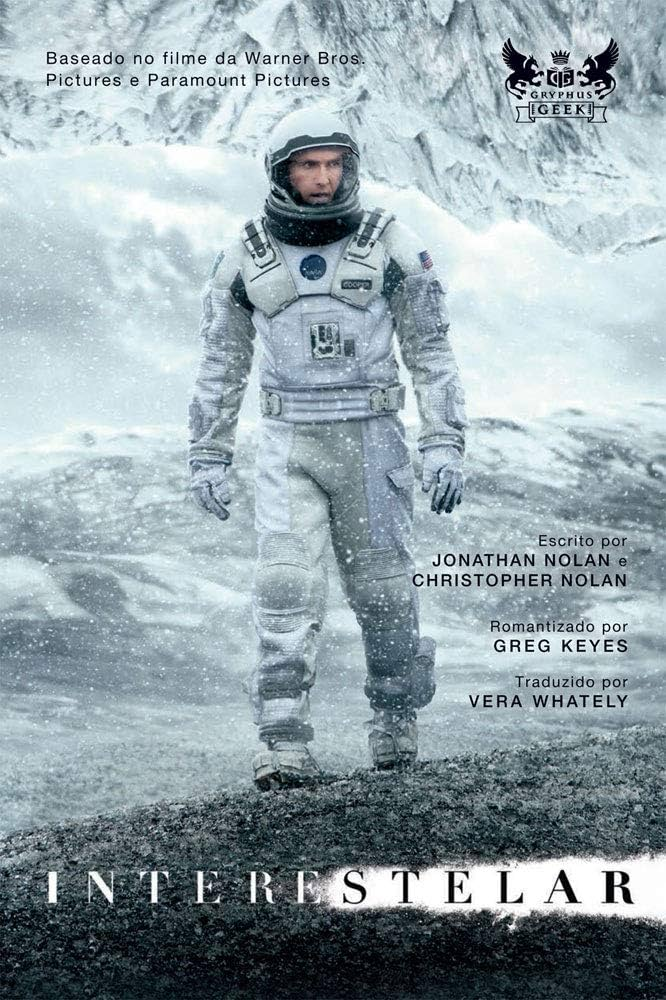

Filmes Favoritos
O resgate do soldado Ryan
Lançamento: 5 de março de 1999
Diretor: Steven Spielberg
Durante a Segunda Guerra Mundial, o capitão John Miller leva seus homens para trás das linhas inimigas para encontrar o soldado James Ryan, cujos três irmãos foram mortos em combate. Cercados pela brutal realidade da guerra, cada homem embarca em uma jornada pessoal e descobre sua própria força para triunfar sobre um futuro incerto com
honra, decência e coragem.
Imdb: 8.6 ★
Principais comentários
Filme espetacular! Cenas chocantes, bem feitas e que retratam bem o que foi a guerra.
Bela edição de som,uma maravilhosa fotografia,um movimento de câmera muito ágil,mostra que Spielberg veio pra mostrar ainda mais sua competência,mesmo já tendo realizado muitos outros grandes clássicos de diferentes gêneros.
Interestelar
Lançamento: 6 de novembro de 2014
Diretor: Christopher Nolan
As reservas naturais da Terra estão chegando ao fim e um grupo de astronautas recebe a missão de verificar possíveis planetas para receberem a população mundial, possibilitando a continuação da espécie. Cooper é chamado para liderar o grupo e aceita a missão sabendo que pode nunca mais ver os filhos. Ao lado de Brand, Jenkins e Doyle, ele seguirá em busca de um novo lar.
Imdb: 8.7 ★

Principais comentários
As possibilidades são infinitas, com uma costura que nos leva do pó as estrelas, do medo a coragem e do amor ao infinito e além, o publico é brindado com mais uma obra do visionario Diretor Christopher Nolan, que nos transborda tanto de informações físicas e concretas, quanto espirituais e transcendentes, deixando-nos livre em nossa leitura, a partir das próprias experiências humanas de cada um.
Uma obra prima para o futuro com certeza. Um elenco de primeiríssima com atuações magistrais. Ficção Cientifica com um drama muito bem contado. Roteiro bem construído.
O Senhor dos Anéis: O Retorno do Rei
Lançamento: 25 de dezembro de 2003
Diretor: Peter Jackson
O confronto final entre as forças do bem e do mal que lutam pelo controle do futuro da Terra Média se aproxima. Sauron planeja um grande ataque a Minas Tirith, capital de Gondor, o que faz com que Gandalf e Pippin partam para o local na intenção de ajudar a resistência.
Imdb: 9.0 ★

Principais comentários
Mais uma Obra prima do excelente Peter Jackson! Aqui finaliza uma das mais belas sagas da história do cinema, agraciado a 11 óscar sendo recordista. Podemos destacar ainda sua parte técnica
que é de cais o queixo e sua trilha sonora que encanta, o elenco é excepcional e suas performances idem. O retorno do rei é um marco na história do cinema.
Da coragem a lealdade, da amizade ao heroísmo, filme que mostra a grandeza dia sentimentos humano. Batalha entre o bem e o mal. Clássico.
Resumo
- O resgate do soldado Ryan
- Interestelar
- O Senhor dos Anéis: O Retorno do Rei